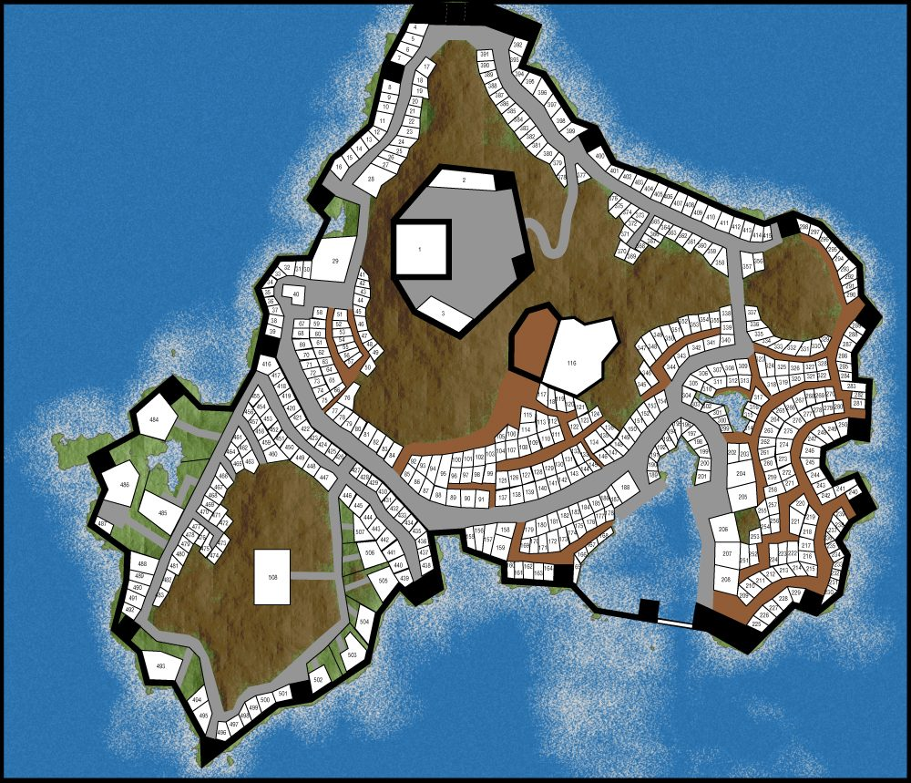
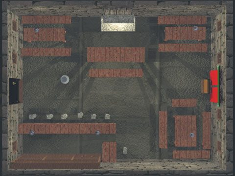
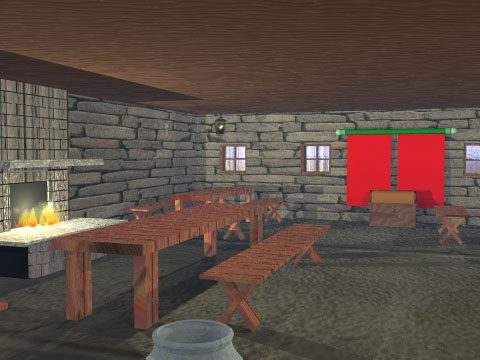
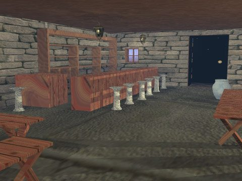
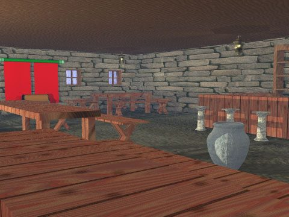
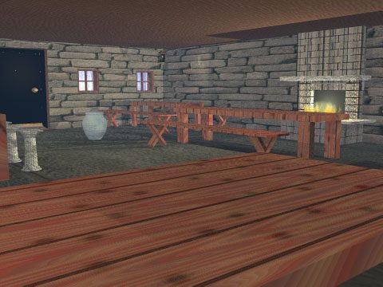
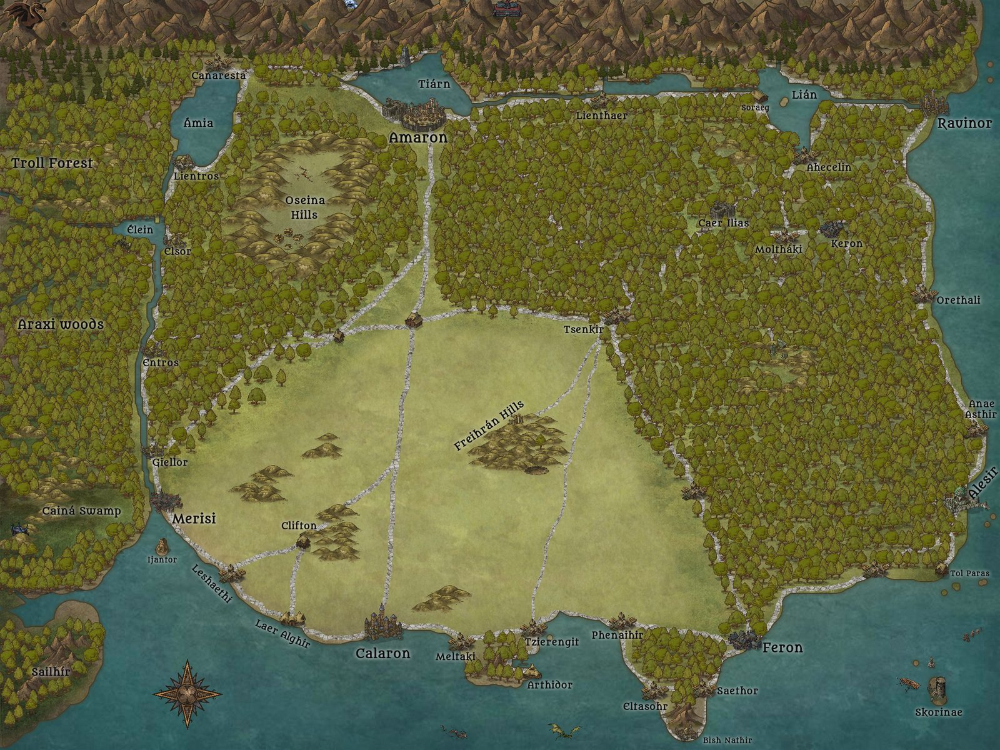
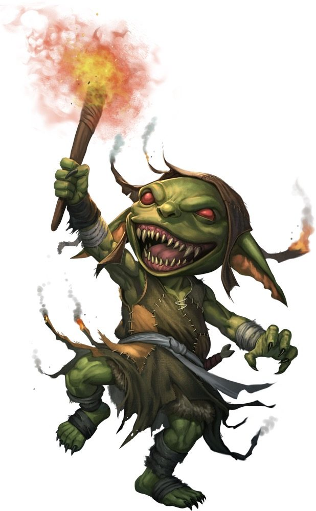
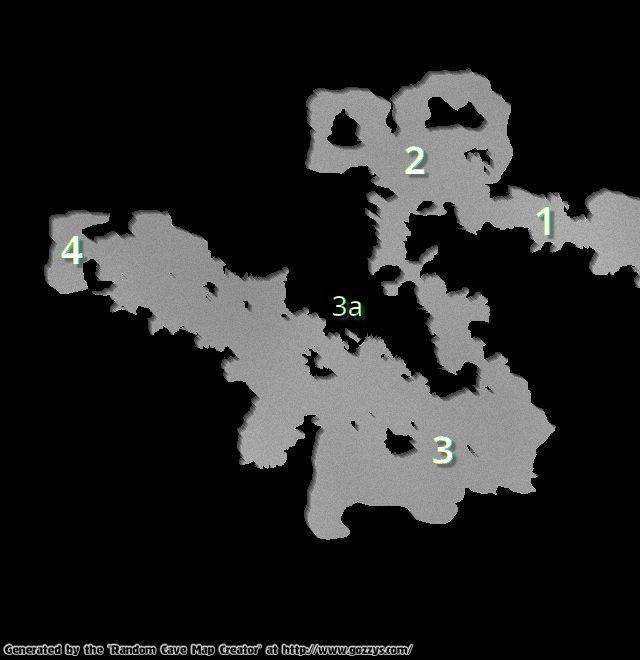

To start off the game, here is a small adventure the Game Master can use to get the players introduced to Amar. Click images to enlarge.


Dining at the Last Dragon Inn
The characters are enjoying a decent dinner at the Last Dragon Inn in Calaron when a dwarf comes barging through the front doors. Looking frantically at the few guests eating such an early supper, he spots a dwarf among the characters and rushes towards the group. Gasping for air, Baladrun the Dwarven Merchant rambles of a plead for help. He asks the characters if the could please, please, pleeeease help save his beloved wife. Just a couple of hours ago, the two of them were ambushed as they approached Calaron from the north. By a pack of Goblins! They tried their best to fight off the 6 rascals but they were outnumbered. Leena, his wife was pinned to the ground as Bladrun got away. Wounded but still able to run he headed for the city to find a kindred who could help get his wife back to safety.
| Last Dragon Inn
     |
|---|


Baladrun offers 30 silver pieces up front if they go with him and another 20 if they rescue Leena.
Tracking the goblins


Given that the characters accept the offer, Baladrun rushes through the city, out through the gates and a couple of kilometers to the north where the small battle ran its course now three hours ago. If any of the characters makes an AWARENESS roll with a DR of 6, they are able to follow the tracks of the goblins hauling the dwarven merchant lady into the woods a couple of hundred meters north west. Here the characters must make an AWARENESS roll with a DR of 8 to follow the track through the woods to the goblin cave.
Arriving at the goblin cave
The Game Master should improvise and describe the surroundings as the characters comb for tracks all the way to the cave in the woods. When they arrive, they see the cave some 50 meters ahead in between the trees. It is only an hour until sunset, and Baladrun knows that the goblins are not hindered by the darkness, while dwarves and half-elves will get -1 to all rolls and humans will get -2. Time to hurry. Baladrun has two lanterns that the characters can use when they get into the cave. With those, none of the characters will get any penalties to their rolls. But, they spot two guards at the cave entrance.
Here the characters have several options. They can sneak up on the goblin guards, use magic to be silent or invisible, try to sneak a bit and then use missile weapons to take them out, rush into an all out melee fight or some other ingenious set of actions. The Game Master must let the players decide on the characters' actions and improvise accordingly. Baladrun is no fighter or adventurer. He is surprisingly cowardly for a dwarf and insists he must stay outside the cave because of his asthma, because someone must stay guard outside and because he has a bad knee... well, actually two bad knees and an aching toe.
The goblins


There are nine goblins in the caves, including the two guards. The guards have the following characteristics:
STRENGTH: 2 ENCUMBRANCE: 2 BODY POINTS: 5 AP: 1 (Leather)
AWARENESS: 5 SNEAKING: 5 SLEIGHT: 3
CLIMBING: 3 SWIMMING: 2
MELEE SKILL: 3 Weapon: Spear (Dam 2)
MISSILE SKILL: 3 Weapon: Sling (Dam 0)
MAGICAL APTITUDE: 0 SPELL CASTING: 0
SPELLS: None
The chieftain has the following characteristics:
STRENGTH: 3 ENCUMBRANCE: 3 BODY POINTS: 6 AP: 2 (Leather & Shield)
AWARENESS: 4 SNEAKING: 3 SLEIGHT: 2
CLIMBING: 2 SWIMMING: 2
MELEE SKILL: 7 Weapon: Long sword (Dam 2)
MISSILE SKILL: 4 Weapon: Bow (Dam 2)
MAGICAL APTITUDE: 0 SPELL CASTING: 0
SPELLS: None
His wife, the goblin shaman has these characteristics:
STRENGTH: 1 ENCUMBRANCE: 1 BODY POINTS: 4 AP: 0 (None)
AWARENESS: 4 SNEAKING: 4 SLEIGHT: 3
CLIMBING: 2 SWIMMING: 1
MELEE SKILL: 2 Weapon: Staff (Dam 0)
MISSILE SKILL: 2 Weapon: Sling (Dam 0)
MAGICAL APTITUDE: 3 SPELL CASTING: 4
SPELLS: Lightning bolt, Healing
The other five goblins (in the "dining room") have these characteristics:
STRENGTH: 2 ENCUMBRANCE: 2 BODY POINTS: 5 AP: 1 (Leather)
AWARENESS: 4 SNEAKING: 3 SLEIGHT: 2
CLIMBING: 3 SWIMMING: 2
MELEE SKILL: 3 Weapon: Spear (Dam 2)
MISSILE SKILL: 2 Weapon: Sling (Dam 0)
MAGICAL APTITUDE: 0 SPELL CASTING: 0
SPELLS: None
Entering the cave
The Game Master should describe the various features in the cave and the drama that unfolds in his most dramatic voice.

The entrance (1)
This is a damp cave corridor with slimy walls and a peculiar somewhat unpleasant smell.
The "dining room" (2)
To approach this area without the five goblins in the room noticing the characters, they all need to make a SNEAKING roll (roll a dice and add the SNEAKING score). The lowest total is the DR that the goblins will roll a dice and add AWARENESS to in order to detect the characters coming. The goblins are preoccupied with a quarrel regarding who gets the best pieces of meat and they get a -3 to their AWARENESS roll. If the goblins detect the characters, they will grab their weapons and are ready for a fight when the characters enters the room. The goblins that do not detect the characters are surprised and get a -2 penalty to all rolls during the first combat round.
If the fight lasts for 5 rounds, the goblin chieftain and his shaman wife will hear the fight and enter the room in round 6, ready to fight (the chieftain) and cast magic spells (the shaman). The chieftain will fire his bow if there is an ongoing fight (the Game Master randomly determines the character he aims for) or engage in a melee combat if the fight is over. After firing one shot, he will engage in melee combat. The shaman wife will cast lightning bolt two times before using her sling, saving the last MAGICAL APTITUDE for a Healing spell as needed.
The sleeping area (3)
This is the goblins' sleeping quarters. The chieftain and his wife are found resting here unless they have heard the fight in (2) and have engaged in the fight. If the fight in (2) was short or somehow ingeniously avoided by invisibility spells or some smart trickery, the characters SNEAKING roll determines the DR for the chieftain and his wife's AWARENESS roll. They get no penalties to their rolls as they are quietly resting on their furs.
The goblins have no valuables on them except for their weapons and armor. All their valuables are kept safe in a small secret room (3a) naturally covered as part of the cavern wall. In order to discover the secret door, the characters must state that they are searching the room. A successful AWARENESS roll with a DR of 7 will reveal the secret door. A SLEIGHT roll with DR of 7 is required to open the door (it has a tricky mechanism). Inside, there is a small chest. A SLEIGHT roll with DR of 8 must be made to pick the lock or a STRENGTH roll of 8 to force it open. If the characters state that they first look carefully at the chest or search it, they can discover a small needle trap (AWARENESS roll with DR of 7). If not, the trap will be triggered if the chest lock is picked or the chest is forced open. The character will receive a dice roll +1 in damage (disregard armor as they must pick or force with bare hands). Inside the chest is a leather pouch with 18 silver and 5 copper pieces as well as a round amulet with a heart symbol nicely engraved in it. A senior mage in Calaron can reveal that this is a Healing enhancing amulet giving its bearer a +1 to Healing spell rolls. There is also a Healing Potion in the chest (drinking it immediately restores a dice roll of BODY POINTS).
The food storage (4)
The goblins store their food here. Not much left as the characters enter, but they find Leena, the merchant wife lying on the floor bound and muffled squirming as she sees the characters enter. The goblins have been talking about getting some ransom for her or selling her to the underground thieves guild as a slave. She fears for her life as she thinks the characters are there to collect her and carry her off to slavery. If the characters manage to soothe her, she will be thankful to the point of crying and when they tell her that Baladrun is just outside she starts a prolonged session of weeping. When she comes out, she launches herself into the arms of her beloved and insists that they give the characters an additional 10 silver pieces for saving her life.
The End
Now that the characters have completed their first quest, ensure they mark their experiences in using various characteristics along the way. And if they are fortunate enough to have successfully used any ten times or more (highly unlikely since this is a short adventure) they will add a point to those.
As a Game Master you can now continue your campaign by creating more adventures. Use the web to search for maps or whole adventures to tailor as you see fit. Adjust any encounters or foes to fit the Amar Lite characteristics. Or you can opt to converting the characters to fully fledged Amar RPG characters. If so, read the rules for the Amar RPG and convert the characters as you feel is right. Or you may just want to start with brand new Amar RPG characters and start from there. Your imagination is the limit. Enjoy role-playing in the Kingdom of Amar! Feel free to contact the main author, Geir Isene (g@isene.com) for any comments, questions or suggestions.